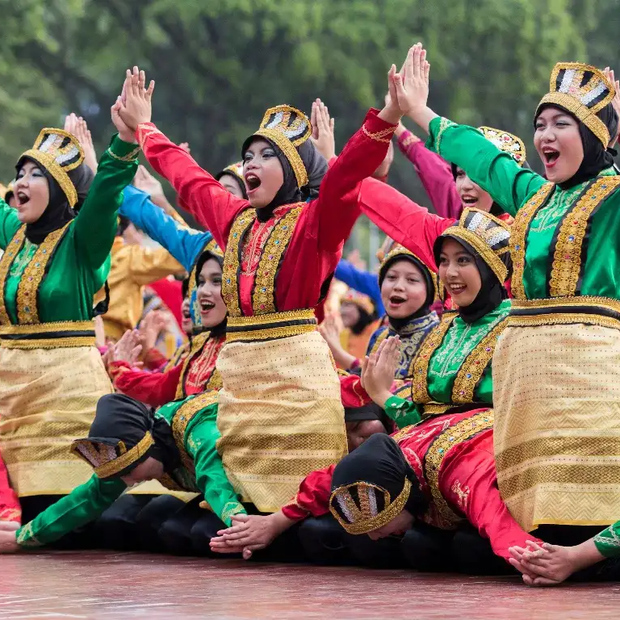
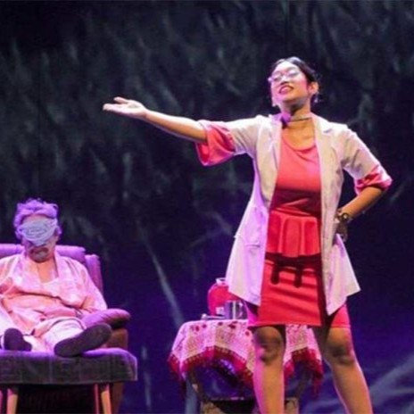
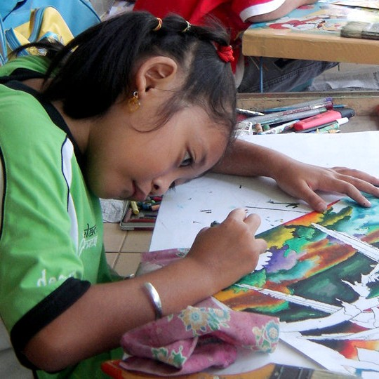

Seni Membentuk Karakter, Mendorong Masa Depan
Di Huma Rumil, kami percaya bahwa seni bukan sekadar hiburan—ia adalah alat pembentuk jiwa. Melalui seni, anak-anak belajar disiplin, empati, keberanian, dan ekspresi diri. Setiap tarian, gambar, dan peran yang mereka mainkan bukan hanya menciptakan karya indah, tetapi juga membangun karakter yang kuat dan penuh makna. Karena dari karakter yang kokoh, lahirlah generasi yang siap mengukir masa depan dengan kreativitas dan nilai budaya yang luhur.
TARI
Tari bukan sekadar gerakan—tari adalah bahasa jiwa dan warisan budaya.
Melalui irama dan gerak, tari mengajarkan disiplin, kepekaan, dan kepercayaan diri. Setiap langkah menyimpan nilai sejarah dan tradisi yang membentuk jati diri bangsa. Di Huma Rumil, kami mengenalkan tari sebagai sarana edukatif untuk mengembangkan kreativitas anak-anak sekaligus menanamkan cinta pada budaya Indonesia.
TEATER
Teater adalah cermin kehidupan dan ruang pembelajaran tanpa batas.
Melalui peran dan dialog, anak-anak belajar memahami emosi, berpikir kritis, dan bekerja sama. Teater melatih keberanian untuk tampil, keterampilan berkomunikasi, serta empati terhadap orang lain. Di Huma Rumil, teater menjadi media ekspresif untuk menumbuhkan karakter, kreativitas, dan kecintaan terhadap budaya melalui cerita yang hidup dan penuh makna.
GAMBAR
Menggambar adalah langkah awal mengekspresikan imajinasi dan mengenal dunia.
Melalui garis dan warna, anak-anak belajar menuangkan ide, melatih fokus, dan mengembangkan kreativitas visual. Menggambar bukan hanya soal estetika, tapi juga cara berpikir, memecahkan masalah, dan membentuk identitas diri. Di Huma Rumil, kami menjadikan kegiatan menggambar sebagai jembatan untuk mengasah bakat, menumbuhkan kepercayaan diri, dan mengenalkan nilai budaya dalam bentuk yang menyenangkan.